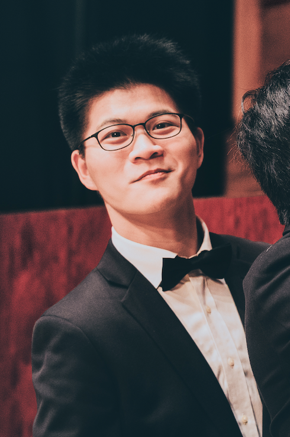

Hello! I'm Li-Yuan Chiang (姜理元). I earned my undergraduate degree from National Taiwan University and am currently pursuing a PhD in Physics at Yale University.
My Inspire HEP personal page can be found here.
If you wish to get in touch, please reach out via email: li-yuan.chiang@yale.edu